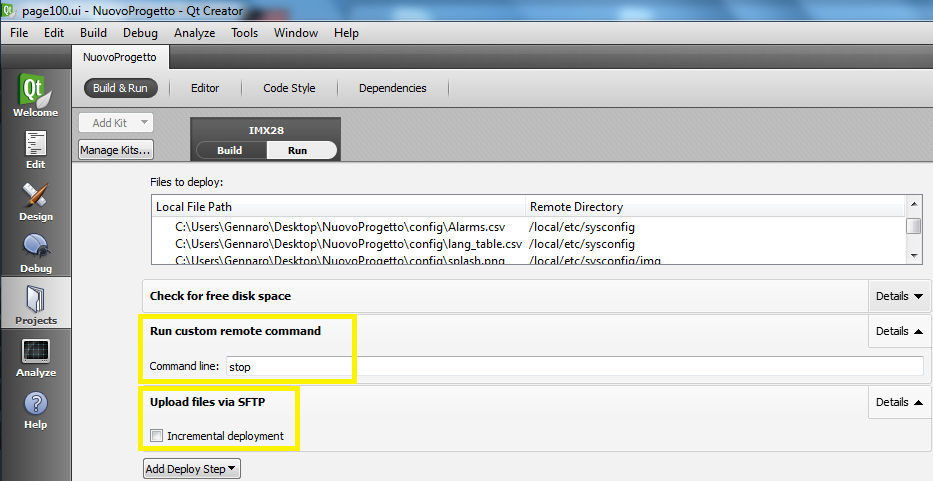

Connect operator panel to PC by a LAN cable.
First time You download the executable file (Deploy) you must select “Projects” → “Run” and setup following parameters:
Disable, in the item “Upload files via SFTP”, flag “Incremental deployment”;
Click on “Add Deploy Step” and select “Run custom remote command”

Write “stop” (lowercase) and move “Run custom remote command” block one position up by arrow in yellow (press Details).

Final result must be the following:

If necessary, it is possible to use a different IP address or a password in the dialog in “Tools → Options → Devices”.

Please check connection between PC and panel. To do it press “Test” key in the right side of the previous figure.
After parameters settings it is possible to send project to the target using the arrow in figure (see yellow circle):